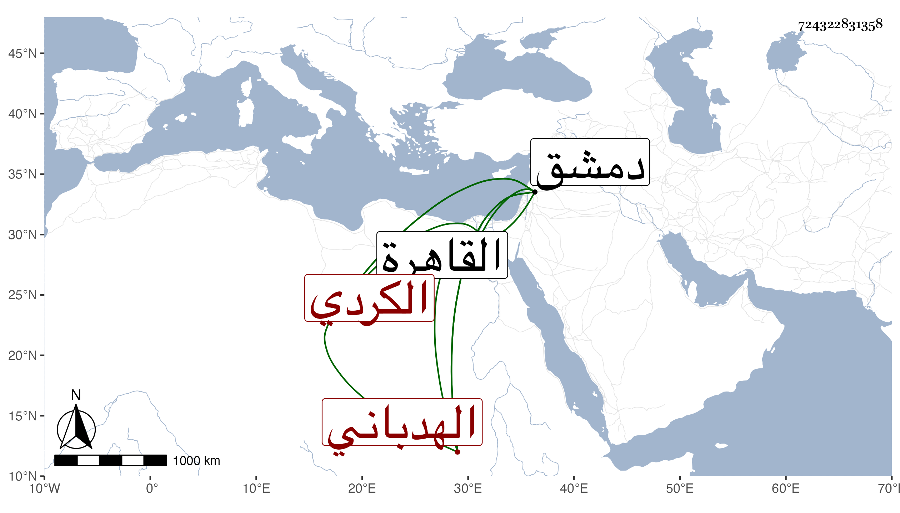

0902Sakhawi.DawLamic.ITO20230111-ara1.EIS1600.724322831358
Biography ID: 724322831358
1301
يوسف الهدباني الكردي من قدماء الأمراء . تأمر في دولة الناصر محمد بن قلاون ، وكان مولده تقريبا سنة أربع وسبعمائة ، وتنقل في الولايات وولي تقدمة وصودر غير مرة ، وفي الأخير كان نائب القلعة عند موت الظاهر فتخيل النائب تنم وأخذها منه فلما غلب الناصر فرج صودر ، وكان يكثر شتم الأكابر على سبيل المزاح ويحتملون ذلك، قاله شيخنا في إنبائه ، وقال غيره : الأمير جمال الدين الهيذباني ولي نيابة قلعة دمشق وقدم القاهرة غير مرة وكان محببا عند الملوك وفيه دعابة مفرطة مع محاضرة حسنة . مات في ثامن ذي الحجة سنة اثنتين بدمشق .
